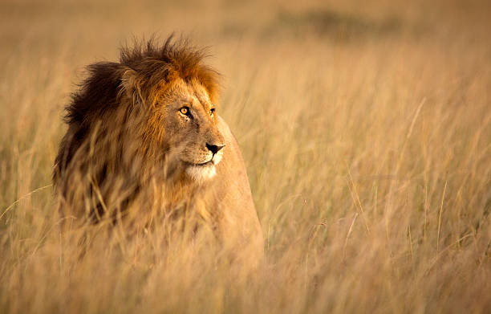

Tracking the Big Five
Deep in the heart of the Serengeti, we witnessed the majesty of Africa's most iconic creatures. Lions lounging in the golden grass, elephants trumpeting their presence at the watering hole, and the elusive leopard draped across an acacia branch. The Big Five aren't just animals; they're the living, breathing spirit of Africa's wilderness.
The African Lion
Known as the king of the jungle, though rarely found in one, the African lion is a symbol of strength and majesty. These social cats live in prides, with females doing most of the hunting while males protect the territory. During our recent expedition, we witnessed an incredible hunting sequence where three lionesses coordinated perfectly to bring down a wildebeest.
Lion Facts
• Average pride size: 10-15 lions
• Lifespan: 10-14 years in the wild
• Hunting success rate: 30%
• Territory size: Up to 100 square miles
The African Elephant
The largest land mammals on Earth, African elephants are incredibly intelligent and social creatures. Their complex family structures and emotional depth continue to amaze researchers. We spent three days following a herd through the Okavango Delta, observing their fascinating social interactions and remarkable parenting behaviors.
Continue reading about the Big Five →Life on the Savanna

The African savanna is a masterpiece of nature's design. At dawn, the landscape comes alive with the sounds of thousands of wildebeest beginning their daily journey. Zebras move in synchronized patterns, while giraffes gracefully browse the treetops. This is the stage where the greatest wildlife show on Earth unfolds every single day.
The Great Migration

Each year, over two million wildebeest, zebras, and gazelles make the perilous journey across the Serengeti-Mara ecosystem. This spectacular migration is one of the most remarkable natural events on the planet, and we were fortunate enough to witness several river crossings during the peak season.
The Master Safari Guides

Our journey wouldn't be complete without the incredible knowledge of local guides. These masters of the bush read the landscape like a book, understanding every footprint, sound, and movement. Their expertise transforms a simple game drive into an educational adventure, revealing the intricate connections between every creature in this complex ecosystem.
Traditional Knowledge
Many of our guides come from families that have lived alongside these animals for generations. Their knowledge combines modern conservation science with traditional ecological wisdom, providing unique insights into wildlife behavior and ecosystem management.
Meet our Safari Guides →Safari Photography Tips

Capturing the perfect wildlife photograph requires patience, skill, and a deep understanding of animal behavior. Our professional photographers share their top tips for getting that perfect shot while respecting wildlife.
Essential Camera Gear
• Camera Body: Full-frame for low light performance
• Lenses: 100-400mm minimum for wildlife
• Support: Sturdy tripod or beanbag
• Accessories: Dust protection and extra batteries
Conservation Efforts

Conservation is at the heart of everything we do. We work closely with local communities and wildlife organizations to protect these magnificent creatures and their habitats for future generations.
Community Initiatives

Our community-based conservation programs focus on education, sustainable development, and creating economic opportunities through responsible tourism. These initiatives help ensure that local communities benefit from and actively participate in wildlife conservation.
Support Conservation →